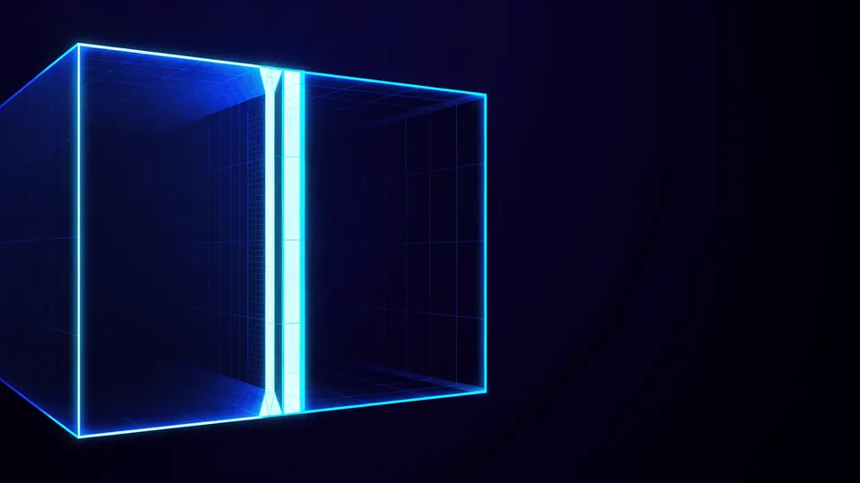

Ürün Videosu Formatını Neye Göre Seçersiniz?
Üç şey belirler: nerede yayınlayacağınız, izleyicinin nasıl izlediği ve ürünün biçimi. Ürün videosu formatı bu üçünün kesişiminde çıkar, tek başına bir tercih değildir. Uzun bir ürün dikey çerçevede rahat durur; geniş bir masa yatay ister. Yayın yeri de oranı ve süreyi birlikte dayatır.
Karar sırası önemlidir. Önce mecra listesini yazın, sonra oranları belirleyin, en son çekim planını kurun. Tersten giderseniz elinizdeki görüntüyü zorla kırpmak zorunda kalırsınız.
Aşağıdaki dört başlık her teslim listesinde bulunur.
- En boy oranı — 16:9, 1:1 ve 9:16.
- Süre — mecraya göre saniyeler ya da dakika.
- Dosya boyutu — yükleme sınırı ve akış kalitesi.
- Altyazı — gömülü mü, ayrı dosya mı.
Listeyi bir tabloya yazın ve ekiple paylaşın. Sözlü aktarılan teslim istekleri kaybolur; yazılı liste ise çekim gününde herkesin önünde durur.
Tek Sürüm Yeter mi?
Kare oran bir orta yol sunar ve çoğu yerde kabul görür. Ancak dikey mecralarda ekranın büyük bölümünü boş bırakır. Format kararını ürün sayfanızın önceliği belirler; her yerde ortalama durmak, hiçbir yerde iyi durmamak anlamına gelebilir.
Hangi En Boy Oranı Nerede Çalışır?
Üç oran işin tamamını kapsar. Yatay 16:9 ürün sayfası ve web için, kare 1:1 akış içeriği için, dikey 9:16 tam ekran mecralar için çalışır. Ürün videosu formatını seçerken hangisinin ana mecra olduğunu belirleyin. Ana mecra hangisiyse çekimi ona göre kurar, gerisini ondan türetiriz.
Dikey çerçeve oranı en çok yanlış anlaşılan olanıdır. Yatay bir kareyi dikeye kırpmak, görüntünün yanlarını atmak demektir; ürün ortada değilse kadraj dışında kalır.
Bu yüzden çekim sırasında güvenli alan bırakırız. Ürünü ortaya yerleştirip kenarlarda boşluk tutmak, tek çekimden üç oran çıkarmayı mümkün kılar. Çekim yerinin bu karara etkisini stüdyo mu mekân mı yazısında ele almıştık.
Güvenli alan kuralı basittir. Kadrajın kenarlarında rahat bir boşluk bırakın; hem dikey kırpma hem de mecra arayüzlerinin bindirdiği düğmeler o boşluğu yer.
Tek Çekimden Üç Oran Çıkar mı?
Çıkar, ama planlanmışsa. Geniş kadrajla çekip kırpmak işe yarar; yalnız netlik kaybını hesaba katmak gerekir. Planlanmamış bir çekimde aynı iş, ürünün yarısını kesmekle sonuçlanır.
Video Ne Kadar Sürmeli?
Ürün sayfasında kısa tutun, akışta daha da kısa. Sayfada izleyici zaten ilgili olduğu için biraz daha uzun kalabilir; akışta ise ilk saniyeler her şeyi belirler. Ürün videosu formatı süreyi de kapsar, çünkü aynı hikâyenin kısa sürümü ayrı kurgulanır. Kısaltmak, hızlandırmak değildir.
Kısa sürüm çıkarmak bir kesme işi değil, yeniden kurgu işidir. Otuz saniyelik bir anlatının altı saniyelik hâli, aynı planların hızlısı olmaz; hangi tek mesajın kalacağına karar vermek gerekir.
İlk saniyeye de ayrı çalışın. Akışta izleyici kaydırmadan önce yalnız o kadarını görür; ürünü ilk karede göstermek en güvenli yoldur.
Kısa Sürüm Neyi Atar?
Bağlamı atar, ürünü tutar. Uzun sürümdeki hazırlık ve kullanım anlatısı kısa sürümde yer bulmaz; geriye tek bir vaat kalır. O vaadi seçmek, kısaltmanın asıl işidir.
Dosya Boyutu ile Kaliteyi Nasıl Dengelersiniz?
Her mecra dosyayı yeniden sıkıştırır, bu yüzden yüklediğiniz dosya kaynak kalitesinde olmalı. Zaten çok kıstığınız bir dosyayı platform bir kez daha sıkıştırınca ürün detayı kaybolur. Ürün videosu formatını yazarken netliği ve kare hızını da ekleyin. Yükleme sınırını aşan dosyayı platform kendi kurallarına göre bozar.
Kaynak dosyayı arşivde tutun. Bir yıl sonra yeni bir mecra çıktığında elinizde yüksek kaliteli bir kaynak yoksa, dar bir sürümden yeni oran üretmek zorunda kalırsınız; sonuç belirgin biçimde kötüleşir.
Renk ve parlaklık da mecradan mecraya değişir. Ürün sayfasında doğru görünen bir ton, karanlık arayüzlü bir uygulamada sönük durabilir; teslimden önce her mecrada gözle kontrol etmek gerekir.
Teslimde dosya adlandırması da işin parçası. Mecra, oran ve süre bilgisini ada yazarsanız yükleme günü kimse yanlış dosyayı seçmez. Otuz ürünlük bir katalogda bu alışkanlık saatler kazandırır.
Kare Hızı Fark Eder mi?
Çoğu ürün videosunda fark yaratmaz. Hızlı hareket ya da yavaşlatma varsa yüksek kare hızıyla çekmek gerekir; yoksa standart hız daha küçük dosya verir.
“Sonradan yapılan her kırpma bir kurgu turudur. Teslim listesini çekimden önce yazmak, o turu baştan siler.”
— TasarımMania prodüksiyon notu
Pazaryerleri Hangi Şartları Arar?
Her satış platformunun kendi kuralları vardır ve bunlar zamanla değişir. Ortak eğilim şudur: temiz arka plan, ürünün net görünmesi, marka logosunun öne çıkmaması ve kısa süre. Ürün videosu formatını seçerken güncel şartları platformun kendi belgesinden okuyun. Kulaktan dolma ölçüler çoğu zaman eskimiştir.
Kuralları yükleme gününde değil, çekim planını kurarken okuyun. Sonradan öğrendiğiniz bir şart, elinizdeki görüntüyü işe yaramaz hâle getirebilir.
Ürün sayfası düzeninin bütünüyle ilişkisini e-ticaret hizmetimizde ele alıyoruz. Durağan görsellerin kendi kuralları ise ayrı bir konudur; onu ürün görselleri yazısında anlattık.
Kuralların değiştiğini de hesaba katın. Bir yıl önce hazırladığınız liste bugün eksik kalabilir; yılda bir kez gözden geçirmek yeterlidir. Değişikliği yakalamanın en kolay yolu, satıcı panelindeki duyuruları takip etmektir.
Format Planınızı Birlikte Çıkaralım
Teslim listesini çekimden önce yazarız. Hangi mecralarda yayınlayacağınızı konuşuyor, her biri için oran, süre ve dosya ölçüsünü tek sayfada topluyoruz. Elinizde bir video değil, bir çıktı paketi kalıyor. Ürün videosu formatı bu listeyle belirlendiğinde sonradan kırpma ihtiyacı doğmuyor. Çekimi de o listeye göre kurarız.
Liste hazırsa çekim planını da ona göre kurarız: güvenli alan, kadraj ve süre baştan belli olur. Ürün videosu hizmetimizi inceleyebilirsiniz.
Formatları ürün grubuna göre de ayırırız. Aynı listeyi bütün katalog için kullanmak pratik durur; oysa büyük ve küçük ürünler farklı kadraj ve farklı süre ister. Kamera kurmadan üretim yolunu kamerasız ürün videosu yazısında adım adım verdik.
Listeyi hazırlarken hangi mecranın gerçekten trafik getirdiğine de bakarız. Her mecraya sürüm üretmek kulağa eksiksiz gelir; oysa kimsenin izlemediği bir orana harcanan saat, başka bir yere gitmeliydi.

Oran, kullanım yeri ve dikkat noktası
| En boy oranı | Nerede çalışır | Dikkat |
|---|---|---|
| 16:9 yatay | Ürün sayfası, web, geniş ekran | Dikey mecrada küçük kalır |
| 1:1 kare | Akış içeriği, çoklu mecra | Ekranın tamamını doldurmaz |
| 9:16 dikey | Tam ekran mecralar | Yatay çekimi kırparsanız ürün kaçar |
| 4:5 dik dikdörtgen | Akışta daha çok yer kaplar | Her platform kabul etmez |
| Kısa sürüm | İlk temas ve akış | Hızlandırma değil, yeniden kurgu |
| Uzun sürüm | Ürün sayfası ve kanal | İlk saniye yine belirleyici |
Ürün videosu formatı tek bir dosya değil, bir teslim listesidir. Oranı, süreyi ve dosya ölçüsünü çekimden önce yazdığınızda tek çekimden bütün mecralara çıkabilir; listeyi sonraya bırakırsanız her yeni mecra yeni bir kurgu turu ister.